- Armatex
- Press fittings
- Cap end 12410
Besco · INOX 316L, Stainless Steel, press, M profile
Cap end, stainless steel 316L press 12410
Cap end from the INOX 316L, Stainless Steel, press, M profile line: 11 sizes from 15 to 108 mm. Application: water, heating, industry.
- Sizes
- 11
- Pressure
- 16 bar
- Temperature
- −10…110 °C
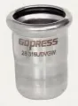
Sizes and article numbers
Source: Besco INOX 316L catalogue| Size | Article number | Bag | Box | Quantity to quote |
|---|---|---|---|---|
| 15 | 1241015 | 10 pcs | 30 pcs | |
| 18 | 1241018 | 10 pcs | 30 pcs | |
| 22 | 1241022 | 10 pcs | 30 pcs | |
| 28 | 1241028 | 10 pcs | 30 pcs | |
| 35 | 1241035 | 4 pcs | 24 pcs | |
| 42 | 1241042 | 4 pcs | 20 pcs | |
| 54 | 1241054 | 4 pcs | 16 pcs | |
| 66.7 | 1241066 | 1 pcs | 4 pcs | |
| 76.1 | 1241076 | 1 pcs | 2 pcs | |
| 88.9 | 1241088 | 1 pcs | 1 pcs | |
| 108 | 12410108 | 1 pcs | 1 pcs |
- Line
- INOX 316L, Stainless Steel, press, M profile
- Application
- water, heating, industry
- Approvals
- DVGW WRAS
- Catalogue name
- Cap End
Request a quote: Cap end 12410.
Add sizes to the list with the “Add” button or write to us straight away. We will prepare wholesale prices, availability and lead times within one working day.
Other products in the line
Search the INOX 316L press line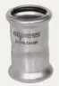
Coupling 12000 · 12 sizes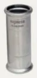
Slip coupling 12040 · 11 sizes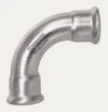
Bend 90° i/i 12200 · 12 sizes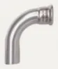
Bend 90° i/a 12210 · 11 sizes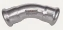
Bend 45° i/i 12230 · 12 sizes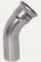
Bend 45° i/a 12240 · 11 sizes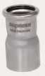
Fitting reducer i/a 12430 · 29 sizes Equal tee 12100 · 12 sizes
Equal tee 12100 · 12 sizes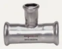
Reducing tee 12110 · 32 sizes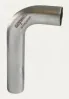
Bend 90° a/a 12350 · 7 sizes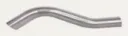
Crossover a/a 12360 · 4 sizes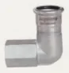
Elbow 90° female 12320 · 5 sizes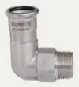
Elbow 90° male 12310 · 7 sizes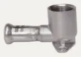
Female wallplate elbow 12340 · 3 sizes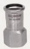
Female adaptor 12020 · 13 sizes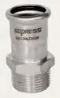
Male adaptor 12010 · 19 sizes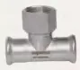
Female tee 12120 · 16 sizes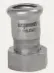
Female tap connector 12070 · 6 sizes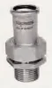
Male union 12080 · 7 sizes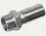
Male adaptor 12450 · 2 sizes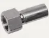
Female adaptor 12460 · 3 sizes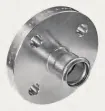
Press flange PN 16 12400 · 8 sizes